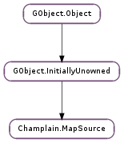

| Subclasses: | Champlain.MapSourceChain, Champlain.TileCache, Champlain.TileSource |
|---|
| fill_tile(tile) | |
| get_column_count(zoom_level) | |
| get_id() | |
| get_latitude(zoom_level, y) | |
| get_license() | |
| get_license_uri() | |
| get_longitude(zoom_level, x) | |
| get_max_zoom_level() | |
| get_meters_per_pixel(zoom_level, latitude, longitude) | |
| get_min_zoom_level() | |
| get_name() | |
| get_next_source() | |
| get_projection() | |
| get_renderer() | |
| get_row_count(zoom_level) | |
| get_tile_size() | |
| get_x(zoom_level, longitude) | |
| get_y(zoom_level, latitude) | |
| set_next_source(next_source) | |
| set_renderer(renderer) |
| Name | Type | Flags | Description |
|---|---|---|---|
| next-source | Champlain.MapSource | r/w | Next source in the loading chain |
| renderer | Champlain.Renderer | r/w | Tile renderer used to render tiles |
None
| Name | Type | Access |
|---|---|---|
| parent_instance | GObject.InitiallyUnowned | r |
Bases: GObject.InitiallyUnowned
The Champlain.MapSource structure contains only private data and should be accessed using the provided API
| Parameters: | tile (Champlain.Tile) – a Champlain.Tile |
|---|
Fills the tile with image data (either from cache, network or rendered locally).
| Parameters: | zoom_level (int) – the zoom level |
|---|---|
| Returns: | the number of tiles in a column |
| Return type: | int |
Gets the number of tiles in a column at this zoom level for this map source.
| Parameters: |
|
|---|---|
| Returns: | the latitude |
| Return type: | float |
Gets the latitude corresponding to this y position in the map source’s projection.
| Returns: | the map source’s license URI. |
|---|---|
| Return type: | str |
Gets map source’s license URI.
| Parameters: |
|
|---|---|
| Returns: | the longitude |
| Return type: | float |
Gets the longitude corresponding to this x position in the map source’s projection.
| Returns: | the maximum zoom level this map source supports |
|---|---|
| Return type: | int |
Gets map source’s maximum zoom level.
| Parameters: |
|
|---|---|
| Returns: | the meters per pixel |
| Return type: | float |
Gets meters per pixel at the position on the map using this map source’s projection.
| Returns: | the miminum zoom level this map source supports |
|---|---|
| Return type: | int |
Gets map source’s minimum zoom level.
| Returns: | the next source in the chain. |
|---|---|
| Return type: | Champlain.MapSource |
Get the next source in the chain.
| Returns: | the map source’s projection. |
|---|---|
| Return type: | Champlain.MapProjection |
Gets map source’s projection.
| Returns: | the renderer. |
|---|---|
| Return type: | Champlain.Renderer |
Get the renderer used for tiles rendering.
| Parameters: | zoom_level (int) – the zoom level |
|---|---|
| Returns: | the number of tiles in a row |
| Return type: | int |
Gets the number of tiles in a row at this zoom level for this map source.
| Returns: | the tile’s size (width and height) in pixels for this map source |
|---|---|
| Return type: | int |
Gets map source’s tile size.
| Parameters: |
|
|---|---|
| Returns: | the x position |
| Return type: | float |
Gets the x position on the map using this map source’s projection. (0, 0) is located at the top left.
| Parameters: |
|
|---|---|
| Returns: | the y position |
| Return type: | float |
Gets the y position on the map using this map source’s projection. (0, 0) is located at the top left.
| Parameters: | next_source (Champlain.MapSource) – the next Champlain.MapSource in the chain |
|---|
Sets the next map source in the chain.
| Parameters: | renderer (Champlain.Renderer) – the renderer |
|---|
Sets the renderer used for tiles rendering.